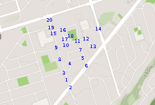

- Sat 28 March 2020
- Running
- Michael Lehotay
- #graph theory, #networkx, #computer science
https://networkx.github.io/
import networkx as nx
import matplotlib.pyplot as plt

G = nx.Graph()
e = [(1,2, 0.08), (1,3, 0.08), (3,4, 0.17), (3,8, 0.15), (4,5, 0.17),
(4,7, 0.27), (5,6, 0.07), (5,7, 0.09), (7,11, 0.01), (8,9, 0.14),
(9,10, 0.11), (9,15, 0.19), (10,11, 0.15), (10,17, 0.09),
(11,12, 0.07), (11,16, 0.37), (12,13, 0.09), (12,14, 0.26),
(13,13, 0.06), (15,16, 0.11), (15,19, 0.06), (16,17, 0.10),
(17,18, 0.04), (19,20, 0.11)]
G.add_weighted_edges_from(e)
nx.draw(G, with_labels=True)

print(nx.dijkstra_path(G, 1, 13))
[1, 3, 4, 5, 7, 11, 12, 13]
nx.draw_planar(G, with_labels=True)
/home/mlehotay/anaconda3/lib/python3.7/site-packages/networkx/drawing/layout.py:950: FutureWarning: arrays to stack must be passed as a "sequence" type such as list or tuple. Support for non-sequence iterables such as generators is deprecated as of NumPy 1.16 and will raise an error in the future.
pos = np.row_stack((pos[x] for x in node_list))

nx.draw_circular(G, with_labels=True)

nx.draw_kamada_kawai(G, with_labels=True)

for line in nx.generate_adjlist(G):
print(line)
1 2 3
2
3 4 8
4 5 7
8 9
5 6 7
7 11
6
11 10 12 16
9 10 15
10 17
15 16 19
17 16 18
12 13 14
16
13 13
14
19 20
18
20
nx.write_weighted_edgelist(G, path='map-edges.txt')
H = nx.read_weighted_edgelist(path='map-edges.txt')
nx.draw(H, with_labels=True)
#plt.show()